Transportability analysis with interpolated g-computation
transportInterpolated.RmdIntroduction
In this vignette, we demonstrate how to use
TransportHealth for interpolated g-computation, a
transportability analysis method based on network meta-interpolation
(Harari et al. 2022) for use when only
aggregate data is available for the original study sample.
Brief introduction to interpolated g-computation
In transportability and generalizability analysis, interpolated g-computation proceeds in largely the same way as network meta-interpolation. First, a model of the treatment effect is fitted in terms of dichotomized effect modifiers. Missing effect modifier information is imputed using the best linear unbiased predictor (BLUP) in terms of observed effect modifier information. Then, an estimate of the treatment effect in the target population is calculated with the fitted model using the summary information of effect modifiers in the target sample.
Example
Suppose we are interested in estimating the causal effect of a medication on systolic blood pressure in a target population, but we were only able to conduct a randomized clinical trial using samples from the a different population.
We know that the effectiveness of the medication depends on two effect modifiers: 1) stress level, and 2) whether patients are taking another medication.
Coded variables:
-
Medication -
med1-
1for treated -
0for untreated
-
Systolic blood pressure (SBP) -
sysBloodPressure(continuous)-
Sex -
sex-
1for male -
0for female
-
Body fat percentage -
percentBodyFat(continuous)-
Stress level -
stress-
1for stressed -
0for normal
-
-
Medication 2 -
med2-
1for treated -
0for untreated
-
Analyses
First, for the implementation of interpolated g-computation in
TransportHealth specifically, the study data should be
aggregate-level. In particular, effect modifiers should be dichotomized.
For this case study, body fat percentage has been dichotomized with 17%
as the threshold. For clarity, we assume that dichotomized variables are
coded as 0-1 with 0 being the baseline. The aggregate-level study data
should have:
- The estimated treatment effect and its estimated standard error
- The estimated subgroup treatment effect within both (marginal) levels of each effect modifier and its estimated standard error
- Proportion of 1s for each effect modifier in the study sample (summary study data)
- The sample size of the original study
The subgroup treatment effects, standard errors and summary study data should be provided in a vector in the same order. Subgroup effects and standard errors corresponding to the levels of the same effect modifier should be next to each other with the subgroup effect of the 1-level placed first. Also, provide a vector which specifies the order in which the subgroup treatment effects and summary study data are provided. In our study, the aggregate-level study data is formatted as follows.
print("Treatment effect:")
#> [1] "Treatment effect:"
print(testData$mainTreatmentEffect)
#> [1] -2.696947
print("Standard error of treatment effect:")
#> [1] "Standard error of treatment effect:"
print(testData$mainSE)
#> [1] 0.2928444
print("Effect modifier names:")
#> [1] "Effect modifier names:"
print(testData$effectModifiers)
#> [1] "med2" "percentBodyFatDicho"
print("Subgroup effects:")
#> [1] "Subgroup effects:"
print(testData$subgroupTreatmentEffects)
#> [1] -7.694596 -2.031682 -3.271305 -1.845090
print("Standard errors of subgroup effects:")
#> [1] "Standard errors of subgroup effects:"
print(testData$subgroupSEs)
#> [1] 0.2921420 0.2814103 0.2854720 0.2969290
print("Summary study data:")
#> [1] "Summary study data:"
print(testData$aggregateStudyData)
#> med2 percentBodyFatDicho
#> 0.108 0.558
print("Sample size:")
#> [1] "Sample size:"
print(testData$nStudy)
#> [1] 1000Since testData$effectModifiers is
c(med2, percentBodyFatDicho), the subgroup effects provided
in the testData$subgroupTreatmentEffects are, in order,
those corresponding to the 1 group and the 0 group of med2,
and then those corresponding to the 1 group and 0 group of
percentBodyFatDicho. This ordering is the same for
testData$subgroupSEs. Likewise,
testData$aggregateStudyData provides proportions of 1s for
med2 and percentBodyFatDicho, in this order.
The ordering is important for the modelling function to process the data
correctly.
On the other hand, the target data may be individual patient-level data or aggregate data. For the former, effect modifiers should still be dichotomized in the target data. For the latter, provide the proportion of 1s for each dichotomized effect modifier, along with the sample size, in a named vector; the ordering does not matter as long as the vector is named appropriately. It is important that effect modifiers are dichotomized the same way in both the study and the target data. You may optionally provide a correlation (not variance) matrix of the dichotomized effect modifiers. If a correlation matrix is not provided, the correlation matrix is calculated from the target data when individual patient-level data is provided, and an independent correlation structure is assumed when aggregate data is provided. In this example, the target data is formatted as follows.
print("Target data:")
#> [1] "Target data:"
head(testData$targetData)
#> sex stress med2 percentBodyFat percentBodyFatDicho n
#> 1 0 1 0 26.12896 1 1500
#> 2 1 1 0 12.04972 0 1500
#> 3 1 1 0 12.55972 0 1500
#> 4 0 0 1 27.07130 1 1500
#> 5 1 1 0 11.85846 0 1500
#> 6 0 1 0 27.64520 1 1500We can now perform transportability analysis using interpolated
g-computation with the transportInterpolated function.
transportInterpolated(link,
effectModifiers,
mainTreatmentEffect,
mainSE,
subgroupTreatmentEffects,
subgroupSEs,
corrStructure = NULL,
studySampleSize,
aggregateStudyData,
targetData)Arguments for the transportInterpolated functions
The transportInterpolated function requires the
following arguments:
link: The link function of the outcome in terms of the treatment used in the source study. If mean differences are provided, use"identity". If odds ratios or hazard ratios are provided, use"log".effectModifiers: Vector of names of effect modifiers to adjust formainTreatmentEffect,mainSE: The estimated treatment effect in the original study and its estimated standard errorsubgroupTreatmentEffects,subgroupSEs: The vector of estimated subgroup treatment effects for each (marginal) level of each effect modifier and their estimated standard errors, formatted as specified abovecorrStructure: The correlation matrix of effect modifiers. This is optional to provide if IPD target data is provided, and defaults to an independent structure if aggregate-level target data is provided.studySampleSize: Sample size of original study dataaggregateStudyData: Summary data of original study datatargetData: IPD or aggregate-level target data.
Specification of transportability analysis
Recall that: - sysBloodPressure is the response
med1is the treatmentmed2(other medication) andstressare effect modifiers of interest.
We supply arguments to the transportInterpolated
function as follows. As sysBloodPressure is a continuous
outcome, the effect estimates are mean differences, so
link = "identity" will be used.
result <- transportInterpolated(link = "identity",
effectModifiers = testData$effectModifiers,
mainTreatmentEffect = testData$mainTreatmentEffect,
mainSE = testData$mainSE,
subgroupTreatmentEffects = testData$subgroupTreatmentEffects,
subgroupSEs = testData$subgroupSEs,
studySampleSize = testData$nStudy,
aggregateStudyData = testData$aggregateStudyData,
targetData = testData$targetData)Producing statistical results
To show the results of the analysis, use summary like
you would for lm when fitting a linear model. Using
summary will print out the transported effect estimate and
its estimated standard error, the link function, and summaries of the
data provided to the function. Note that scientific conclusions should
only be drawn from this output.
summary(result)
#> Transported ATE: -3.95921451963891
#> Standard error: 0.304971797066218
#> Link function: identity
#> Source study treatment effect: -2.69694717565351
#> Source study standard error: 0.29284438183309
#> Subgroup source treatment effects:
#> effectModifier subgroup effect se
#> 1 med2 1 -7.694596 0.2921420
#> 2 med2 0 -2.031682 0.2814103
#> 3 percentBodyFatDicho 1 -3.271305 0.2854720
#> 4 percentBodyFatDicho 0 -1.845090 0.2969290
#> Source data summary:
#> med2 percentBodyFatDicho
#> 0.108 0.558
#> Target data summary:
#> med2 percentBodyFatDicho
#> 0.303 0.709We have found via simulation that interpolated g-computation tends to
perform less well when the degree of effect modification is larger than
the main treatment effect, so conclusions from
transportInterpolated in such situations should be made
with caution. The magnitude of effect modification can be informally
evaluated by looking at forest plots of the original study from which
the treatment effects are retrieved, or by looking at the
summary output of transportInterpolated. More
specifically, the output contains the subgroup effects provided by the
user. Using either method, one should compare the difference in subgroup
effects between levels of the same effect modifier with the magnitude of
the main treatment effect to evaluate whether the interaction effect is
larger than the main effect.
To obtain a coefficient plot of estimates, use the plot
function.
plot(result)
Like other methods supported by TransportHealth, the
validity of interpolated g-computation depends on untestable causal
inference assumptions, including stable unit treatment value (SUTVA),
conditional exchangeability, positivity and consistency (Ling et al. 2023; Degtiar and Rose 2023).
However, interpolated g-computation does not have readily available
diagnostics to evaluate if these assumptions are likely to hold or not.
Due to the limited amount of information from the original study, causal
inference assumptions should be evaluated using contextual knowledge
about study design.
Additionally, it is expected that interpolated g-computation will perform less well than inverse odds of participation weights and g-computation, as a lot of information is lost when only aggregate-level data is available for the original study data. As a result, we suggest that only one effect modifier is adjusted for when using interpolated g-computation.